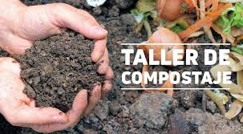
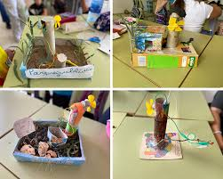
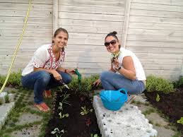
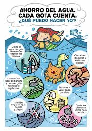

Descubre nuestros Talleres
Participa en talleres interactivos diseñados para explorar técnicas innovadoras y sostenibles. Aprende, crea y forma parte del cambio.
Talleres Disponibles

Taller: Compostaje en Casa
Aprende a crear compost en tu hogar utilizando residuos orgánicos y mejora la fertilidad de tu jardín. Adopta una práctica sostenible para reducir tus residuos de manera significativa.

Taller: Introducción a las Energías Renovables
Descubre cómo implementar tecnologías limpias, como paneles solares y turbinas eólicas, para transformar el consumo energético en tu hogar o comunidad.

Taller: Huerto Urbano en Casa
Aprende a cultivar alimentos en espacios pequeños, como balcones o terrazas. Un paso hacia la autosuficiencia y la sostenibilidad urbana.

Taller: Técnicas de Ahorro de Agua
Conoce estrategias prácticas para reducir el consumo de agua y optimizar su uso en las actividades diarias, desde el riego hasta el hogar.